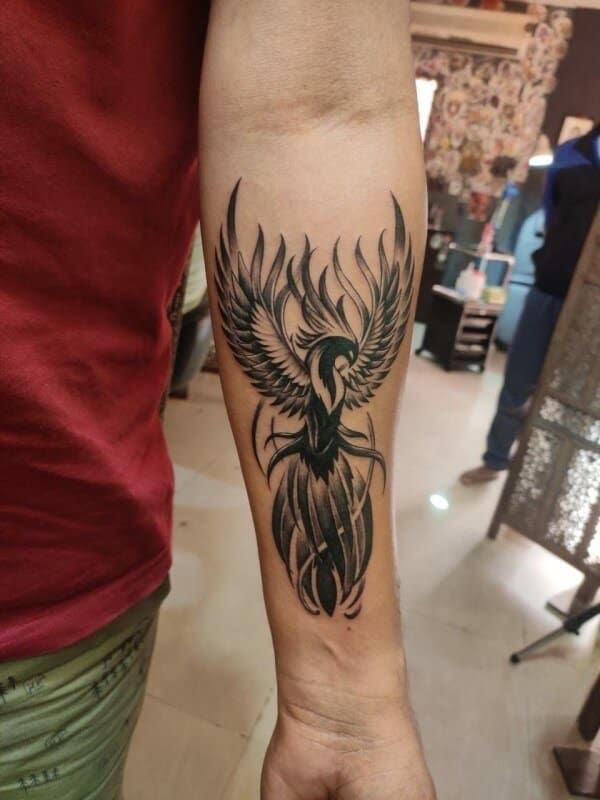

Why Get Tattoos
Art is a great component of many individuals’ passions and dreams. People often use art as a getaway from reality, like myself, I draw continuosly all the time.
There are many ways to capture the beauty in your life within tattoos, whether it’s to commemorate important things in your life, remember great memories, or simply experiment!
Tattoos have been around for ages and they will around longer still. It is a way to

Fun Facts
- You can tattoo your eyeballs
- The most expensive “tattoo” was made with diamonds
- The oldest evidence for tattoos dates back more than 5000 years ago
- New Zealand is the most tattooed country in the world
- Romans used tattoos as a punishment